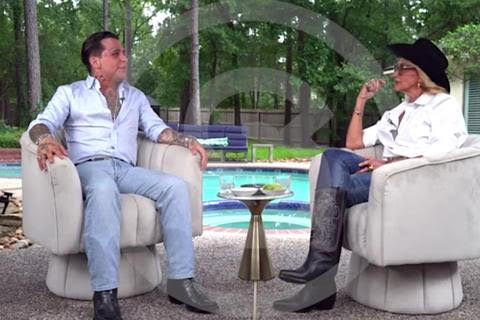
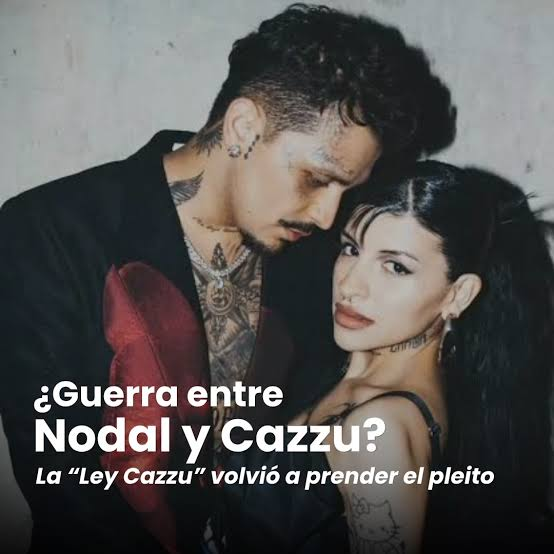

La historia entre Cazzu, Christian Nodal y Ángela Aguilar se convirtió en una de las polémicas más grandes de la música latina. Lo que comenzó como una relación amorosa entre una cantante argentina y un artista mexicano terminó convirtiéndose en un escándalo internacional que involucró una separación inesperada, una nueva relación anunciada pocas semanas después, un casamiento, declaraciones contradictorias, acusaciones públicas y discusiones sobre la crianza de una hija.
Para entender todo el chisme hay que remontarse a varios años antes de la separación, porque Ángela Aguilar y Christian Nodal ya se conocían desde mucho antes de que Cazzu comenzara su relación con él.
En 2020, Christian Nodal y Ángela Aguilar lanzaron juntos la canción Dime Cómo Quieres, una colaboración que tuvo muchísimo éxito dentro del género regional mexicano. En ese momento, Ángela era una artista adolescente que estaba comenzando a consolidar su carrera, mientras que Nodal ya era una de las figuras más importantes de la música mexicana.
Durante la promoción de la canción, ambos mostraron mucha complicidad artística. Sus interacciones y la química que transmitían en el videoclip hicieron que algunos seguidores comenzaran a imaginarlos como pareja, aunque ninguno confirmó que existiera una relación sentimental en esa época.
Este antecedente terminó siendo importante años después, porque cuando Nodal y Ángela anunciaron su romance en 2024, mucha gente volvió a revisar sus antiguas entrevistas, presentaciones y videos para buscar señales de que había existido algún interés romántico entre ellos.
Sin embargo, no hay pruebas públicas concluyentes de que mantuvieran una relación secreta desde 2020.
Antes de estar con Cazzu, Christian Nodal mantenía una relación muy mediática con la cantante Belinda. Ambos habían comenzado su noviazgo en 2020, se comprometieron en 2021 y parecían estar encaminados hacia el matrimonio. Sin embargo, en febrero de 2022 anunciaron su separación, que también generó controversias en las redes sociales y los medios.
Meses después, Nodal comenzó a acercarse a Julieta Cazzuchelli, conocida artísticamente como Cazzu, una de las referentes del trap argentino. Los artistas habían coincidido en el ambiente musical y, en junio de 2022, Cazzu apareció como invitada en un concierto de Nodal en México, donde interpretaron juntos una canción.
A partir de ese momento comenzaron los rumores de romance. Fueron vistos compartiendo salidas y viajes, y poco a poco su relación se hizo pública. La pareja despertó mucha curiosidad porque provenían de estilos musicales y personalidades bastante diferentes: Nodal representaba el regional mexicano, mientras que Cazzu tenía una imagen más vinculada al trap y a la música urbana.
Con el paso de los meses se consolidaron como una de las parejas más conocidas de la música latina.
En abril de 2023, Cazzu sorprendió al público durante un concierto en el Movistar Arena de Buenos Aires al revelar que estaba embarazada. Lo hizo mostrando su panza sobre el escenario, en un momento que rápidamente se volvió viral.
La noticia generó una enorme repercusión porque era el primer hijo de ambos artistas. Durante el embarazo, Cazzu y Nodal compartieron algunos momentos de su vida juntos, y el cantante mexicano expresó públicamente su entusiasmo por convertirse en padre.
El 14 de septiembre de 2023 nació Inti, la hija de la pareja. Su llegada marcó una nueva etapa en la relación, y durante los meses siguientes ambos proyectaban públicamente una imagen familiar. Cazzu comenzó a equilibrar su carrera con la maternidad, mientras que Nodal continuó con sus compromisos musicales.
Desde afuera, la relación parecía estable. Por eso, lo que ocurrió durante los primeros meses de 2024 sorprendió tanto a sus seguidores.
El 23 de mayo de 2024, Christian Nodal anunció públicamente que su relación con Cazzu había terminado. La noticia llegó cuando su hija tenía apenas ocho meses y provocó una enorme sorpresa entre sus seguidores. En su comunicado, Nodal expresó que habían decidido tomar caminos separados y destacó que continuarían unidos por el amor hacia su hija. Cazzu también compartió un mensaje relacionado con la ruptura, manteniendo un tono reservado y evitando exponer detalles íntimos.
En ese momento, ninguno explicó públicamente con precisión cuáles habían sido las razones de la separación. Tampoco se confirmó que hubiera existido una infidelidad. Sin embargo, comenzaron a circular rumores sobre una posible tercera persona. El nombre de Ángela Aguilar empezó a aparecer cada vez más en las conversaciones de redes sociales, especialmente porque ya tenía una relación de amistad y colaboración profesional con Nodal.
Lo que nadie esperaba era que, apenas unas semanas después, los rumores sobre ellos se convirtieran en una noticia oficial.
Aunque la separación se anunció el 23 de mayo, en agosto de 2025 Nodal dio una entrevista con Adela Micha en la que reconstruyó su propia cronología. Según él, su relación con Cazzu había terminado definitivamente el 8 de mayo de 2024, después de varias crisis anteriores. También afirmó que durante los últimos meses habían perdido la conexión romántica y que convivían más como compañeros que como pareja.
Según esa misma versión, el 13 de mayo volvió a encontrarse con Ángela Aguilar en Guadalajara y el 14 de mayo se dieron su primer beso. Es decir, según las fechas proporcionadas por el cantante, solamente habían pasado seis días desde su separación definitiva con Cazzu.
Nodal también aseguró que el 20 de mayo le informó a Cazzu que estaba comenzando a salir con una persona famosa, y que el 25 de mayo le reveló que se trataba de Ángela. Estas afirmaciones son importantes porque forman parte de su defensa frente a las acusaciones de infidelidad, pero no constituyen una versión compartida por todas las personas involucradas.

El 10 de junio de 2024, menos de tres semanas después del anuncio de la separación, Ángela Aguilar y Christian Nodal confirmaron oficialmente que estaban juntos mediante una exclusiva para la revista ¡HOLA!. La declaración que más repercusión tuvo fue la de Ángela, quien explicó que su relación no había comenzado desde cero, sino que era la continuación de una historia que había quedado interrumpida tiempo atrás.
Esto generó una enorme controversia porque muchos interpretaron sus palabras como una señal de que había existido un vínculo sentimental previo. Sin embargo, la frase por sí sola no demostraba que hubiera ocurrido una infidelidad durante la relación de Nodal con Cazzu. Las redes sociales se llenaron de críticas, memes, teorías y comparaciones entre las dos cantantes. Muchas personas cuestionaban especialmente la rapidez con la que Nodal había comenzado una nueva relación después de convertirse en padre.
La polémica también se alimentó de fotografías, interacciones antiguas y apariciones públicas de Nodal y Ángela que los seguidores comenzaron a analizar.
Después de que se confirmara la nueva pareja, Cazzu decidió publicar un comunicado en sus redes sociales. La cantante explicó que estaba atravesando un momento difícil por la exposición mediática y que prefería alejarse temporalmente de internet.
Su principal preocupación, según expresó, era concentrarse en su hija Inti, en su trabajo y en recuperar tranquilidad. En lugar de atacar públicamente a Nodal o a Ángela, Cazzu habló de la necesidad de respetar los procesos personales y recordó que las situaciones humanas no siempre pueden dividirse entre personas completamente buenas o malas.
Este mensaje fue muy comentado porque contrastaba con la enorme cantidad de acusaciones que circulaban en internet. Durante varios meses, la artista argentina evitó contar públicamente los detalles de la ruptura, mientras la nueva relación de su expareja continuaba ocupando titulares. Billboard Colombia
.jpg)
El 24 de julio de 2024 llegó otra noticia que sorprendió al público: Christian Nodal y Ángela Aguilar se habían casado por civil en México. La ceremonia se realizó en una hacienda de Morelos y contó con la presencia de familiares y personas cercanas. Entre los protagonistas estuvo Pepe Aguilar, padre de Ángela, quien acompañó a su hija durante la boda.
El matrimonio ocurrió apenas dos meses después de que Cazzu y Nodal anunciaran públicamente su separación, y aproximadamente seis semanas después de que Ángela y Nodal confirmaran su noviazgo.
Más adelante se conoció otro detalle: según contó Nodal en 2025, él y Ángela ya habían realizado una ceremonia espiritual en Roma el 29 de mayo de 2024, antes de anunciar oficialmente que estaban juntos. Es decir, siguiendo su propio relato, esa primera ceremonia había ocurrido apenas 21 días después de su ruptura definitiva con Cazzu. Para muchos seguidores, esa rapidez era una de las cuestiones más difíciles de comprender. No obstante, el matrimonio civil de julio y la ceremonia espiritual de mayo fueron acontecimientos diferentes.
Meses después de su casamiento, Ángela Aguilar habló públicamente sobre las críticas que recibía su relación. En una entrevista, sostuvo que las personas involucradas conocían lo que estaba ocurriendo y dio a entender que la situación no había sido una sorpresa para quienes formaban parte de ella. También expresó que no se había roto ningún corazón como consecuencia de su relación.
Estas declaraciones provocaron una nueva ola de controversia, porque fueron interpretadas como una afirmación de que Cazzu estaba al tanto de lo sucedido y no había resultado lastimada. Hasta ese momento, Cazzu había mantenido bastante reserva sobre su experiencia personal. Sin embargo, las palabras de Ángela hicieron que decidiera responder públicamente y explicar cómo había vivido la separación.
El 31 de octubre de 2024, Cazzu participó en una entrevista en el programa PLP de Luzu TV, en Argentina. Esta conversación se convirtió en uno de los momentos más importantes de toda la polémica. La cantante explicó que había sufrido mucho durante la separación y cuestionó directamente la idea de que todas las personas involucradas hubieran conocido y aceptado la nueva relación.
Cazzu sostuvo que ella no había participado de ningún acuerdo previo y que se había enterado de la relación de Nodal con Ángela a través de su exposición pública. También manifestó que le había dolido escuchar declaraciones que minimizaran su sufrimiento. Su respuesta fue especialmente significativa porque no se limitó a hablar de una ruptura sentimental. Cazzu señaló que había una niña involucrada y que las declaraciones públicas también podían afectar a su familia.
A partir de ese momento, la discusión dejó de centrarse únicamente en cuánto tiempo había pasado entre una relación y otra. La gran pregunta pasó a ser quién sabía qué estaba ocurriendo y cuándo se había enterado. Mientras Ángela había presentado la situación como algo conocido por los involucrados, Cazzu sostuvo que esa versión no representaba su experiencia.
Después de la entrevista, Cazzu comenzó a concentrarse nuevamente en su carrera musical y en su vida familiar en Argentina. Su regreso artístico generó mucho interés porque parte del público interpretaba sus canciones, sus presentaciones y sus mensajes como posibles referencias a lo que había vivido con Nodal. Sin embargo, no todas las canciones o publicaciones de la artista pueden considerarse indirectas hacia su expareja. Muchas de esas interpretaciones surgieron entre seguidores y medios de entretenimiento, sin confirmación expresa de Cazzu.
Mientras tanto, Nodal y Ángela continuaron apareciendo juntos en eventos y compartiendo aspectos de su matrimonio, aunque la controversia en torno a su relación no desapareció. La situación también provocó que las dos cantantes fueran comparadas constantemente, algo que terminó convirtiendo una separación privada en una disputa mediática mucho más amplia.

En diciembre de 2024, Cazzu lanzó La Cueva, una canción que muchos interpretaron como una referencia directa a su ruptura con Nodal. La letra hablaba de una relación en la que una persona había brindado amor y apoyo, pero había terminado sufriendo. La canción tuvo una gran repercusión porque Cazzu volvía a expresarse artísticamente después de meses de polémicas. Aunque la cantante habló de sus experiencias personales como inspiración, no todos los detalles de la canción pueden atribuirse de manera literal a acontecimientos concretos.
En marzo de 2025 lanzó Con Otra, que generó todavía más comentarios. La canción aborda una situación de desamor en la que aparece otra mujer, por lo que numerosos seguidores la relacionaron con Ángela Aguilar. El videoclip, la letra y las reacciones de internet alimentaron nuevas teorías sobre supuestas indirectas entre las artistas. Sin embargo, es importante diferenciar las interpretaciones de los fans de las declaraciones confirmadas de las cantantes.
Durante una visita a México, Cazzu fue consultada sobre la relación que mantenía con Nodal respecto de los gastos de su hija. La cantante explicó que existía un aporte económico por parte del padre, pero que no consideraba justo el acuerdo porque los gastos de crianza eran elevados. También señaló que prefería elegir cuidadosamente qué conflictos llevar a la Justicia.
Sus declaraciones reavivaron la polémica, esta vez centrada en las responsabilidades económicas y familiares después de la separación. El debate público comenzó a girar alrededor de cuánto participaba Nodal en la crianza de Inti. No obstante, las cifras que circularon en redes no deben confundirse con un acuerdo económico judicialmente verificado
El 13 de agosto de 2025, Nodal concedió una extensa entrevista a Adela Micha en la que explicó cómo había terminado su relación con Cazzu y cómo había comenzado su romance con Ángela Aguilar. El cantante aseguró que no le había sido infiel a Cazzu y que la relación estaba terminada cuando comenzó su acercamiento romántico con Ángela. También explicó que él y Cazzu habían atravesado varias separaciones anteriores y que habían intentado continuar juntos por su hija.
Además, reconoció que todo había sucedido muy rápido y que lamentaba la manera en que se habían desarrollado los acontecimientos, aunque sostuvo que estaba enamorado de Ángela y que quería compartir su vida con ella. La entrevista provocó una nueva controversia porque las fechas reveladas mostraban que habían transcurrido muy pocos días entre la separación, el primer beso con Ángela y la ceremonia espiritual en Roma.
También quedó expuesta una diferencia fundamental entre los relatos: Nodal afirmaba que había informado a Cazzu sobre su nueva relación antes del anuncio público, mientras que ella había explicado que se enteró de una manera distinta.
En septiembre de 2025, Cazzu participó en el podcast Se Regalan Dudas, donde contó uno de los episodios más delicados de su conflicto con Nodal. La artista explicó que necesitaba una autorización para viajar internacionalmente con su hija debido a sus compromisos laborales. Según su relato, llevaba más de un año intentando conseguir un permiso amplio que le permitiera organizar sus viajes con tranquilidad.
Durante una mediación legal, el abogado de Nodal habría planteado que una autorización podía ser revocada por su cliente. Cazzu describió esa conversación como una experiencia especialmente angustiante y expresó que se había sentido en una posición de vulnerabilidad. Sus declaraciones provocaron fuertes críticas hacia Nodal. Sin embargo, se trataba del relato de Cazzu sobre una negociación legal y no de una resolución judicial pública que permitiera establecer todos los hechos denunciados.
Otro momento que generó muchísimo revuelo fue el encuentro entre Cazzu y Belinda, dos de las exparejas más conocidas de Christian Nodal. En noviembre de 2025 circularon fotografías de ambas artistas juntas, y los seguidores reaccionaron inmediatamente porque las dos habían mantenido relaciones muy mediáticas con el cantante mexicano.
El encuentro fue interpretado por numerosos usuarios como un gesto de complicidad entre ellas. También surgieron memes y comentarios sobre sus respectivas historias con Nodal. Sin embargo, una fotografía juntas no demuestra que existiera un acuerdo para atacar al cantante ni una alianza contra Ángela Aguilar. Esas fueron interpretaciones de las redes sociales.
En febrero de 2026 apareció una nueva controversia, esta vez a partir de una canción de Rauw Alejandro, Jhayco y Tainy titulada Rosita. La letra incluía una referencia a Christian Nodal y a su manera de casarse rápidamente, lo que muchos interpretaron como una burla a su matrimonio con Ángela Aguilar después de separarse de Cazzu.
Cazzu reaccionó publicando un texto titulado Tiradera, donde cuestionó la forma en que algunos artistas hombres normalizaban o minimizaban situaciones que podían causar daño a otras personas. Rauw Alejandro aclaró que no había escrito la frase en cuestión y que no había pretendido faltarle el respeto a Cazzu.
Nodal también intervino públicamente. Sostuvo que la referencia musical era una broma sobre su reputación de enamorarse rápidamente y cuestionó algunas declaraciones de su expareja. Además, negó haber abandonado a su hija y rechazó las acusaciones relacionadas con los permisos de viaje. Así, una canción que inicialmente no pertenecía a ninguno de los tres protagonistas terminó reabriendo el conflicto por la separación y la crianza de Inti.
Esta es una de las preguntas que más se repitieron desde que comenzó el escándalo. Por un lado, Nodal sostuvo que su relación con Cazzu había terminado antes de que comenzara su romance con Ángela. También reconoció que había existido una conexión anterior con Ángela, durante la pandemia, pero negó haber mantenido una relación paralela mientras estaba con Cazzu. Por otro lado, Cazzu explicó públicamente que la separación la había lastimado y rechazó la versión de que ella conociera y aceptara toda la situación.
Ángela, a su vez, presentó su romance con Nodal como la continuación de una historia anterior y afirmó que los involucrados sabían lo que ocurría. Por lo tanto, lo que está confirmado es la rapidez de los acontecimientos, pero no existe una prueba pública concluyente que permita afirmar como hecho que Nodal engañó a Cazzu con Ángela.
Lo que hizo que esta historia se volviera tan mediática no fue solamente que Christian Nodal terminara una relación y comenzara otra. La controversia surgió por la combinación de varios factores: Cazzu y Nodal acababan de convertirse en padres, la nueva relación se hizo pública muy poco tiempo después de la separación, Ángela ya conocía a Nodal desde hacía años y el matrimonio ocurrió con una rapidez inesperada.
A esto se sumaron las declaraciones contradictorias sobre lo que sabía Cazzu, la repercusión de las canciones interpretadas como indirectas y, posteriormente, los desacuerdos familiares relacionados con Inti. Con el tiempo, la historia dejó de ser solamente un escándalo romántico y pasó a involucrar cuestiones de maternidad, paternidad, exposición mediática y responsabilidades después de una separación.
Hasta octubre de 2026, el punto central de la polémica sigue siendo la diferencia entre las versiones públicas de los protagonistas, especialmente sobre cómo comenzó la nueva relación y cómo se desarrollaron los acontecimientos posteriores. Para completar todavía más este lore, el siguiente capítulo interesante sería reconstruir las indirectas, canciones, entrevistas y publicaciones de Instagram que los seguidores relacionaron con la polémica, ordenadas por fecha y distinguiendo cuáles fueron confirmadas y cuáles fueron teorías de internet.